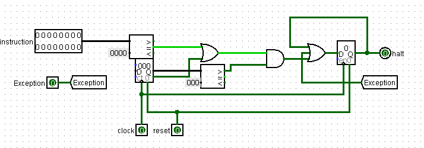
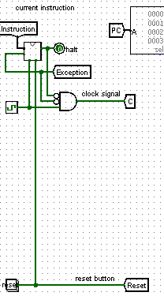
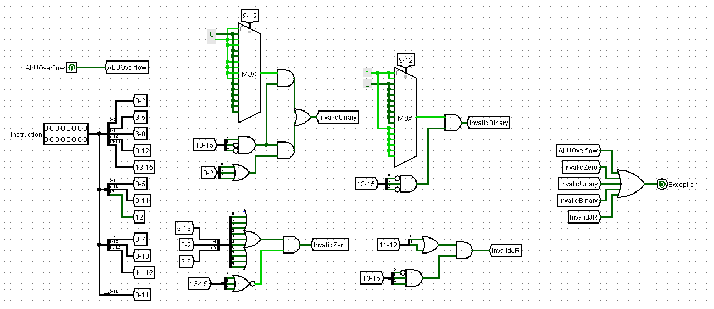

Titel: Project 7: Datapath in Use
Dit verslag werd opgesteld door:
De oplossing bestaat uit de volgende bestanden (geef alle bestanden op):
First at all let's look at the modified halt circuit below.
Halt circuit stops returns true (1) back if the program count is out of range, the program counter == 0, or by an appearing exception.
At the picture below you can see the halt circuit in use:
So, if the halt circuit gives 1 back, the clock can not change the value of the Program counter, and the program stops running.
There are two cases when an exception can appear:
Let's look carefully inside of the Exception control:
Here we can split the "The instruction does not exist" case in the four smaller cases:
Occurs by zero operation if some bits (beside 6-8, which correspond to rd code number) are not equal to 0.
Occurs by the instructions whose opcode begins with 001. Bits 9-12 do not use all possible combinations, so if somebody tries to use not existing instruction, the exception is called. There is also another reason for the exception: the 0-2 bits have to be equal to zero, otherwise you have a non-existing instruction.
Occurs by the instructions whose opcode begins with 010. Bits 9-12 do not use all possible combinations, so if somebody tries to use not existing instruction, the exception is called.
Occurs by the instruction whose opcode begins with 011, namely jr. Bits 11-12 do not use all possible combinations (they have to be equal to zero), so if somebody tries to use not-existing instruction, the exception is called.